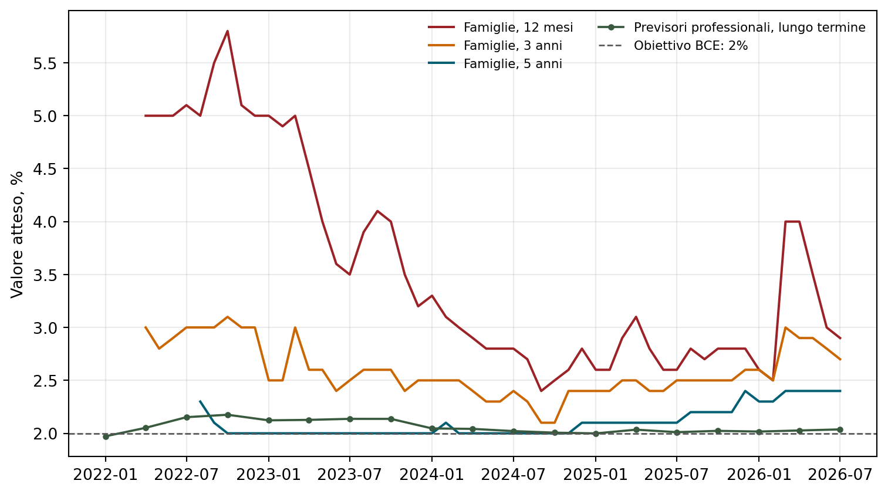
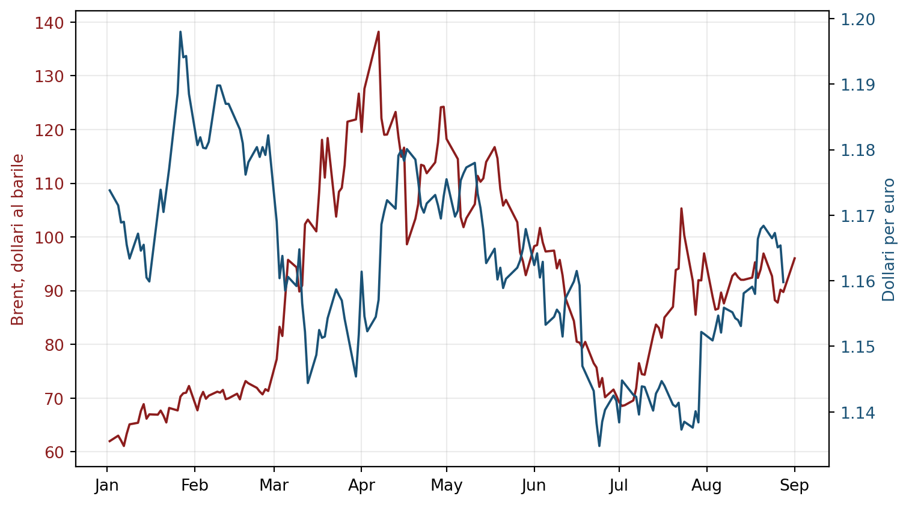

Il 10 settembre dei tassi
Cosa può decidere la Banca centrale europea e cosa cambia per banche e imprese
Paolo Volterra ![]()
Il 10 settembre 2026 il Consiglio direttivo della Banca centrale europea si riunisce con un quadro di segnali contrastanti: l’inflazione complessiva dell’area dell’euro è risalita al 3,3 per cento ad agosto, trainata quasi esclusivamente dai prezzi dell’energia, mentre l’inflazione di fondo continua a scendere. I prezzi del petrolio e del gas restano elevati alla vigilia della riunione e non danno segni di rientro; l’euro, però, si è rafforzato e attenua in parte la pressione sui prezzi importati. Questo lavoro ricostruisce i segnali che orientano la decisione, valuta i possibili esiti della riunione e ne analizza le conseguenze per il sistema bancario e per le imprese. Al momento della stesura, i prezzi di mercato indicano come esito prevalente un aumento di 25 punti base, che porterebbe il tasso sui depositi al 2,50 per cento. L’eventuale rialzo avrebbe natura assicurativa contro un possibile disancoraggio delle aspettative, non risponderebbe a un eccesso di domanda; i dati osservati, tuttavia, non mostrano che tale disancoraggio sia già in corso.
inflazione, BCE, tassi di interesse, shock energetico, margine di interesse, costo del capitale, rischio di credito
Versione citabile su Zenodo, con il PDF: doi.org/10.5281/zenodo.22299182.
1 Cosa è in gioco il 10 settembre
Il Consiglio direttivo della Banca centrale europea ha alzato i tassi ufficiali di 25 punti base l’11 giugno 2026, portando il tasso sui depositi al 2,25 per cento, e li ha lasciati invariati il 23 luglio [1], [2]. La riunione del 10 settembre arriva dopo la pubblicazione della stima preliminare dell’inflazione di agosto e sarà accompagnata dalle nuove proiezioni macroeconomiche dello staff [3].
Al momento della stesura, le analisi di mercato e la previsione di Intesa Sanpaolo indicano come esito prevalente un ulteriore aumento di 25 punti base, che porterebbe il tasso sui depositi al 2,50 per cento [4], [5]. Le fonti disponibili non pubblicano però quotazione, timestamp e metodo di conversione sufficienti a ricostruire una probabilità numerica: il presente lavoro non attribuisce quindi una percentuale ai possibili esiti.
La decisione non è però scontata nel merito, perché i segnali disponibili puntano in direzioni opposte.
2 I segnali contrastanti
2.1 Inflazione complessiva in risalita, inflazione di fondo in calo
Secondo la stima preliminare di Eurostat, l’inflazione dell’area dell’euro è salita al 3,3 per cento su base annua ad agosto 2026, dal 2,9 per cento di luglio; è il valore più alto degli ultimi tre anni circa [6]. In Italia l’indice nazionale dei prezzi al consumo segna una variazione del 3,3 per cento e l’indice armonizzato del 3,2 per cento [7].
L’aumento è quasi interamente riconducibile alla componente energetica: i prezzi dell’energia nell’area dell’euro crescono del 14,3 per cento su base annua, e in Italia i beni energetici salgono del 17,0 per cento [6], [7]. L’inflazione di fondo, che esclude energia e alimentari, si muove invece nella direzione opposta: 2,4 per cento nell’area dell’euro e 1,5 per cento in Italia, entrambe in riduzione rispetto ai mesi precedenti. Le pressioni sui prezzi dei servizi e sui salari, che segnalerebbero la propagazione dello shock al resto dell’economia, non si sono manifestate. Anche gli indici PMI sui prezzi degli input e di vendita indicano ad agosto un’ulteriore attenuazione delle pressioni inflazionistiche, con tensioni sull’offerta stabilizzate e nessuna propagazione all’inflazione al netto dell’energia [8]. Questa evidenza depone contro un disancoraggio già in corso; non può essere presentata come prova del rischio opposto.
2.2 Le aspettative misurate dalla BCE
La Consumer Expectations Survey della BCE rileva mensilmente le aspettative delle famiglie. La Survey of Professional Forecasters rileva invece ogni trimestre le previsioni degli esperti [9], [10]. Le due fonti misurano popolazioni e orizzonti differenti e non vanno fuse in un solo indicatore; lette insieme permettono però di distinguere una revisione ciclica a breve da uno spostamento persistente delle aspettative lontano dall’obiettivo.

Figura 1: Aspettative d’inflazione nell’area dell’euro, gennaio 2022-ultima osservazione disponibile. Mediane ponderate delle famiglie a 1, 3 e 5 anni (CES) e media delle previsioni professionali di lungo periodo (SPF).
Per quantificare la revisione dopo l’inizio dello shock si usa, per ciascun orizzonte \(h\),
\[\Delta E_h = E_{t_1}(\pi_{t_1+h}) - E_{t_0}(\pi_{t_0+h}),\]
dove \(t_0\) è febbraio 2026 e \(t_1\) è l’ultima osservazione disponibile della stessa serie.
| Misura | Inizio 2026 (%) | Ultima osservazione (%) | Variazione (p.p.) |
|---|---|---|---|
| Famiglie, 12 mesi | 2.5 | 2.9 | +0.4 |
| Famiglie, 3 anni | 2.5 | 2.7 | +0.2 |
| Famiglie, 5 anni | 2.3 | 2.4 | +0.1 |
| Previsori, lungo termine | 2.02 | 2.04 | +0.02 |
Le aspettative delle famiglie aumentano soprattutto sull’orizzonte annuale e molto meno su quello quinquennale; quelle di lungo periodo dei previsori professionali rimangono prossime al 2 per cento. Il quadro indica una percezione dello shock nel breve periodo, ma non una revisione generalizzata e crescente delle aspettative a tutte le scadenze. Non costituisce pertanto evidenza di disancoraggio.
2.3 I prezzi dell’energia non rientrano

Figura 2: Prezzo del greggio Brent (scala sinistra) e cambio euro-dollaro (scala destra), 2026. Il greggio raddoppia tra la primavera e l’estate e resta su livelli elevati; l’euro si rafforza dalla fine di giugno.
Alla vigilia della riunione il prezzo del greggio Brent è intorno ai 96 dollari al barile, dopo aver toccato circa 70 dollari alla fine di giugno [11]. Il prezzo del gas naturale europeo di riferimento, il contratto sull’hub olandese Title Transfer Facility, è risalito oltre i 70 euro per megawattora, il livello più alto dalla fine del 2022 [12]. La pressione all’origine dell’inflazione di agosto, quindi, è ancora presente al momento della decisione e non in via di riassorbimento. Questo toglie forza all’argomento principale di chi propende per un rinvio, che si reggerebbe su un rientro rapido e visibile dei prezzi energetici.
2.4 L’euro più forte lavora nella direzione opposta
Dalla fine di giugno l’euro si è apprezzato nei confronti del dollaro statunitense, passando da circa 1,14 a circa 1,16 dollari per euro [13]. Un cambio più forte riduce il prezzo in euro delle importazioni denominate in dollari, a partire dalle materie prime energetiche, e trasferisce all’economia dell’area una parte di disinflazione. In questo senso l’apprezzamento del cambio svolge una parte del lavoro che la banca centrale otterrebbe alzando i tassi, e attenua l’urgenza di un intervento.
2.5 Il contesto esterno
La Federal Reserve mantiene i tassi ufficiali nell’intervallo 3,50-3,75 per cento da cinque riunioni consecutive [14]. Un aumento dei tassi europei allargherebbe il divario di orientamento tra le due banche centrali e tenderebbe a rafforzare ulteriormente l’euro. Sui mercati obbligazionari internazionali i rendimenti dei titoli di Stato a lunga scadenza sono su livelli elevati in tutte le principali economie avanzate [15], un contesto che di per sé spinge verso l’alto anche i rendimenti europei.
2.6 Sintesi dei segnali
| Elemento | Direzione |
|---|---|
| Inflazione complessiva 3,3 per cento, in risalita | verso il rialzo |
| Prezzi di petrolio e gas elevati e non in rientro | verso il rialzo |
| Aspettative dichiarate dalla banca centrale a luglio | verso il rialzo |
| Prezzi di mercato dei contratti sui tassi | verso il rialzo |
| Inflazione di fondo in calo (2,4 e 1,5 per cento) | verso l’attesa |
| Euro più forte, effetto disinflazionistico sulle importazioni | verso l’attesa |
| Crescita dell’area dell’euro debole | verso l’attesa |
| Natura di offerta dello shock, temporaneo per costruzione | verso l’attesa |
| Divario di orientamento con la Federal Reserve | verso l’attesa |
3 Due blocchi informativi e un confronto econometrico
L’analisi distingue due blocchi. Il primo raccoglie le variabili economiche che possono segnalare intensità, persistenza e propagazione dello shock. Il secondo raccoglie le variabili finanziarie che incorporano previsioni sulla politica monetaria, premi per il rischio e riallocazioni di portafoglio. La distinzione evita di usare il prezzo di un’attività finanziaria come prova circolare del fenomeno economico che il mercato sta cercando di prevedere.
| Blocco economico: alert | Blocco finanziario: pricing e trasmissione |
|---|---|
| energia, inflazione headline e core | futures €STR e OIS riferiti alle riunioni |
| servizi, salari e prezzi delle imprese | inflation-linked swap a diverse scadenze |
| CES, SPF e sondaggi presso le imprese | Bund, OAT, BTP e relativi spread |
| PIL, PMI, disoccupazione e credito | Treasury, Gilt e titoli svizzeri |
| persistenza e ampiezza della propagazione | EUR/USD, cambio effettivo, forward FX e cross-currency basis |
In una successiva estensione econometrica, l’esito della riunione può essere codificato come \(y_t\in\{-1,0,+1\}\) — taglio, invariato, rialzo — e stimato mediante un logit multinomiale basato soltanto sulle informazioni economiche disponibili prima della riunione:
\[P(y_t=k\mid X_t)= \frac{\exp(\alpha_k+X_t'\beta_k)} {\sum_j\exp(\alpha_j+X_t'\beta_j)}.\]
La probabilità fondamentale \(p_t^E\) può essere confrontata con quella implicita nei mercati \(p_t^M\) attraverso \(g_t=p_t^M-p_t^E\). Il divario non è un errore automaticamente attribuibile a uno dei due blocchi: può riflettere informazione più tempestiva, comunicazione della banca centrale oppure premi per il rischio. Il modello richiede dati organizzati per riunione, vintage realmente disponibili a ciascuna data e validazione fuori campione; non è stimato nel presente lavoro.
Titoli sovrani e cambi aiutano a interpretare il divario, ma non identificano isolatamente una decisione BCE. Il rendimento di un titolo del paese \(i\) può essere rappresentato come:
\[y_{i,t}^{(n)}=\overline{E_t(r)}^{(n)}+TP_t^{(n)}+CR_{i,t}^{(n)}+LP_{i,t}^{(n)},\]
dove ai tassi brevi attesi si sommano premio a termine, rischio sovrano e liquidità. Il confronto fra Bund e Treasury aiuta a separare gli shock europei dai fattori globali; OAT–Bund e BTP–Bund isolano soprattutto componenti sovrane. Analogamente, EUR/USD riflette il differenziale monetario atteso fra BCE e Federal Reserve, ma anche premi valutari, crescita relativa, shock energetici e domanda di attività rifugio. Per identificare nuova informazione sono quindi preferibili variazioni in finestre strette attorno a comunicati BCE e sorprese macroeconomiche, osservando congiuntamente €STR/OIS, Bund, spread ed euro.
4 Cosa può decidere la Banca centrale europea
4.1 Dalla curva dei tassi a una probabilità
Gli overnight index swap sono comunemente impiegati come indicazione di mercato del percorso atteso dei tassi ufficiali [16]. La conversione di un tasso implicito in probabilità segue il modello binario documentato dal CME FedWatch e analizzato anche nella letteratura accademica [17], [18]. Se il mercato ammettesse soltanto due esiti — tasso invariato \(r_0\) oppure rialzo di 25 punti base a \(r_1\) — il tasso forward successivo alla riunione sarebbe il valore atteso:
\[f=(1-p)r_0+pr_1.\]
Risolvendo rispetto a \(p\) si ottiene:
\[p(\text{rialzo}) = \frac{f-r_0}{r_1-r_0}.\]
Se il contratto restituisce la media \(R\) del tasso overnight durante un mese che contiene la riunione, occorre prima separare i \(n_{pre}\) giorni antecedenti dai \(n_{post}\) giorni successivi:
\[R=\frac{n_{pre}r_{pre}+n_{post}f}{n_{pre}+n_{post}}, \qquad f=\frac{(n_{pre}+n_{post})R-n_{pre}r_{pre}}{n_{post}}.\]
| Quantità | Fonte necessaria | Stato nel presente lavoro |
|---|---|---|
| \(r_0\) deposit facility rate | BCE disponibile via Data | Portal BCE |
| \(R\) oppure \(f\) future €STR o OIS riferito alla riunione | quotazione auditabile non disponibile | |
| \(n_{pre}, n_{post}\) calendario del contratt | o e della riunione calcolabile dopo la sce | lta del contratto |
| spread €STR–DFR | serie €STR e tasso sui depositi | da stimare alla data della quotazione |
| insieme degli esiti | ipotesi esplicita sulla decisione | modello binario: invariato oppure +25 punti base |
Il Data Portal della BCE documenta che il tasso sui depositi vigente alla data di aggiornamento è pari a 2.25 per cento. Non pubblica però nel dataset utilizzato un forward specifico della riunione dal quale ricavare \(R\) o \(f\). Senza contratto, quotazione e timestamp una percentuale puntuale non è replicabile; si può affermare soltanto che le fonti di mercato consultate considerano il rialzo l’esito prevalente.
La letteratura invita inoltre a non identificare meccanicamente il forward con una probabilità fisica. I futures sui tassi possono contenere premi per il rischio variabili nel tempo [19]; più in generale, forward e futures non sono misure pure delle aspettative perché incorporano il prezzo del rischio [20]. Le densità ricavate dai derivati sono pertanto probabilità risk-neutral, appropriate per la valutazione finanziaria ma non necessariamente coincidenti con le frequenze soggettive degli investitori [21]. Anche disponendo della quotazione, il risultato andrebbe dunque presentato come probabilità implicita nei prezzi, condizionata alle ipotesi elencate, non come probabilità statistica oggettiva.
4.2 Un rischio possibile, non un disancoraggio osservato
I dati qui esaminati documentano uno shock energetico ampio e persistente, ma non documentano un disancoraggio delle aspettative. Una misura di mercato disponibile punta semmai nella direzione opposta: l’inflation swap dell’area dell’euro a dieci anni si colloca intorno al 2,3 per cento, ma l’analisi di Intesa Sanpaolo lo giudica moderatamente sopravvalutato rispetto ai fondamentali e ne prevede la discesa verso il 2,2 per cento alla fine del 2026 e sotto il 2 per cento entro dicembre 2027 [22]. Uno swap incorpora anche premi per il rischio e condizioni di liquidità e non coincide quindi con una previsione pura; non mostra tuttavia una deriva persistente delle aspettative lontano dall’obiettivo.
Per sostenere l’esistenza di un disancoraggio servirebbe una convergenza di misure dirette e aggiornate — aspettative a cinque anni, inflation swap su più scadenze e sondaggi presso imprese e famiglie — che qui non emerge. Il richiamo al 2022-2023 stabilisce soltanto un’analogia: poiché lo shock corrente è ampio, anche il rischio potrebbe esserlo. Il confronto sistematico pubblicato il 3 settembre da BNP Paribas indebolisce però l’ipotesi di equivalenza: sulla base dei dati fino ad agosto, valuta l’impatto dello shock del 2026 sull’inflazione e sull’attività come sensibilmente minore di quello del 2022 e non ne trova traccia complessiva nei dati d’indagine [23]. Il rischio resta quindi una congettura plausibile su cui una banca centrale può scegliere di assicurarsi, non un fatto verificato dai dati presentati.
4.3 Aumento di 25 punti base
Le analisi consultate lo indicano come esito prevalente. Il tasso sui depositi passerebbe dal 2,25 al 2,50 per cento. La logica non è quella di raffreddare un eccesso di domanda, che non c’è: l’inflazione di fondo scende e la crescita è debole. La logica sarebbe assicurativa. Uno shock di offerta sui prezzi dell’energia è per sua natura temporaneo, e il manuale di politica monetaria suggerirebbe di “guardare oltre” l’impulso, evitando di comprimere l’attività economica per un aumento dei prezzi destinato a rientrare. Questo vale però solo finché le aspettative di inflazione a medio termine restano ancorate al 2 per cento. Quando lo shock è ampio, prolungato e ripetuto — un aumento del 14-17 per cento dei prezzi energetici, dopo l’episodio del 2022-2023 — la banca centrale può giudicare aumentato il rischio che imprese e lavoratori incorporino stabilmente un’inflazione più alta nelle decisioni di prezzo e di salario. Un rialzo servirebbe allora a segnalare che la banca centrale intende prevenire quel disancoraggio, non a contrastarne uno già osservato né a incidere direttamente sui prezzi dell’energia, sui quali la politica monetaria non ha presa.
4.4 Tassi invariati
È l’esito alternativo. Un rientro del petrolio o del gas nei giorni immediatamente precedenti la riunione, oppure proiezioni dello staff più favorevoli per il 2026 e il 2027, potrebbero aumentarne rapidamente il peso. Le fonti disponibili non consentono di quantificare né la probabilità dell’esito né una soglia di Brent o TTF oltre la quale il mercato cambierebbe orientamento.
4.5 Il segnale sul seguito conta più della decisione
Poiché l’aumento di settembre è in larga parte già incorporato nei prezzi di mercato, la reazione dei rendimenti dipenderà soprattutto da come la banca centrale si esprimerà sul percorso successivo. Un’indicazione che apra a un ulteriore rialzo entro dicembre spingerebbe i rendimenti verso l’alto; un’indicazione che presenti quello di settembre come l’ultimo passo di un ciclo li lascerebbe stabili o li farebbe scendere. La banca centrale, dal luglio 2026, ha smesso di fornire indicazioni prospettiche vincolanti e decide riunione per riunione: è probabile che mantenga questa impostazione, lasciando aperte entrambe le possibilità.
5 Conseguenze per le banche
L’effetto di un aumento dei tassi sul conto economico di una banca dipende dai tempi con cui si riprezzano le due parti del bilancio.
5.1 Il margine di interesse
Sul lato dell’attivo, i prestiti a tasso variabile e i titoli in scadenza si adeguano rapidamente ai nuovi tassi di mercato. Sul lato del passivo, il costo della raccolta si adegua con ritardo. All’inizio di un ciclo di rialzi questo sfasamento allarga il margine di interesse, perché i rendimenti dell’attivo salgono prima dei costi del passivo.
Il vantaggio si riduce nel tempo. La quota dell’aumento dei tassi ufficiali che una banca trasferisce ai propri depositanti — la sensibilità del costo dei depositi, in inglese deposit beta — parte bassa e cresce con il progredire del ciclo e con la concorrenza. Con titoli di Stato che rendono il 3-4 per cento e collocamenti al dettaglio dedicati ai risparmiatori, i clienti spostano la liquidità dai conti correnti non remunerati verso depositi vincolati e conti a rendimento. Per trattenere la raccolta, le banche alzano i tassi passivi, e il costo del funding sale. Il margine si normalizza. Nel primo semestre del 2026 il costo della raccolta obbligazionaria delle banche italiane è aumentato di circa 70 punti base.
5.2 Le minusvalenze sul portafoglio titoli
Un aumento dei rendimenti di mercato riduce il prezzo dei titoli a reddito fisso già in portafoglio, e la perdita cresce con la vita residua dei titoli. Per un titolo di Stato italiano a scadenza 2037, con una durata finanziaria vicina a dieci, un aumento di 25 punti base del rendimento corrisponde a una riduzione del prezzo di circa il 2,4 per cento.
L’impatto contabile dipende da come i titoli sono classificati. I titoli valutati al costo ammortizzato non generano effetti sul conto economico né sul patrimonio finché sono detenuti, ma la perdita resta latente e si manifesterebbe in caso di vendita anticipata per esigenze di liquidità. I titoli valutati al fair value con contropartita a patrimonio netto riducono direttamente il capitale della banca. I titoli di negoziazione colpiscono il conto economico. È il meccanismo che ha reso vulnerabili alcune banche nel 2022-2023, quando la rapidità del rialzo dei tassi ha prodotto minusvalenze latenti ingenti sui portafogli di titoli a lunga scadenza.
Un elemento attenua il quadro per le banche italiane. Lo scarto di rendimento tra il titolo di Stato italiano e quello tedesco a dieci anni è rimasto stabile, nell’intervallo di 76-83 punti base, per tutto il periodo recente di tensione sui mercati obbligazionari internazionali. L’Italia sale in sincronia con il resto del mercato, non più di esso: non è in corso una riprezzatura del rischio sovrano italiano specifica, del tipo osservato nel 2011-2012.
5.3 Il rischio di credito
L’aumento dei tassi si trasmette alla qualità del portafoglio prestiti attraverso i conti delle imprese affidate. Un margine operativo più basso e oneri finanziari più alti peggiorano gli indici di copertura del servizio del debito, e quindi aumentano la probabilità di insolvenza stimata. Le rettifiche di valore su crediti e il costo del rischio tendono a salire: nel primo semestre del 2026 le stime interne di sistema collocavano il costo del rischio in scenario avverso intorno ai 45 punti base, con crediti deteriorati in aumento e rettifiche in crescita rispetto all’anno precedente.
6 Conseguenze per le imprese
Nello scenario del 2026 l’impresa non affronta un problema isolato, ma quattro pressioni simultanee.
| Pressione | Origine | Effetto |
|---|---|---|
| Materie prime ed energia più care | shock geopolitico sui prezzi energetici; beni energetici in Italia +17 per cento su base annua | costi di produzione in aumento, margine operativo in calo |
| Finanziamento più costoso | rialzi della banca centrale, obbligazioni societarie intorno al 5 per cento, prestiti bancari in riprezzamento | oneri finanziari in aumento, utile ante imposte in calo |
| Soglia di rendimento più alta | il rendimento privo di rischio più alto alza il costo del capitale proprio | meno progetti di investimento superano la soglia di convenienza |
| Domanda più debole | l’inflazione erode il potere d’acquisto delle famiglie e i tassi alti raffreddano la spesa a credito | ricavi e volumi sotto pressione, difficoltà a trasferire a valle i maggiori costi |
Le prime due pressioni comprimono i conti dal lato dei costi, la quarta dal lato dei ricavi, la terza alza l’asticella che il risultato deve comunque raggiungere.
6.1 Perché uno shock di offerta è più difficile da gestire
Quando l’inflazione nasce da un eccesso di domanda, la banca centrale alza i tassi, la domanda si raffredda e i margini delle imprese reggono perché i costi non aumentano. Quando l’inflazione nasce da uno shock di offerta, come nel 2026, i costi aumentano e la banca centrale alza comunque i tassi per proteggere le aspettative: l’impresa si trova ad affrontare costi più alti, domanda più debole e finanziamento più costoso nello stesso momento. La politica monetaria non può attenuare questa combinazione, perché lo strumento che userebbe — tassi più bassi — riaccenderebbe l’inflazione.
6.2 Chi è più esposto
Sono più esposte le imprese a forte consumo di energia, come la metallurgia, la chimica, la ceramica, il vetro, la carta e il cemento; le imprese molto indebitate, che devono rifinanziarsi a tassi doppi rispetto al 2021; le imprese con basso potere di mercato, che non riescono a trasferire a valle gli aumenti di costo; e i produttori di beni durevoli e di beni di investimento, la cui domanda è rinviabile e spesso finanziata a credito. Attenuano l’impatto un marchio forte, i contratti indicizzati, le coperture su cambio ed energia, una leva finanziaria bassa e un portafoglio ordini pieno.
6.3 Il costo del capitale e gli investimenti
Il rendimento richiesto dagli azionisti si può descrivere come la somma del rendimento privo di rischio e di un premio per il rischio azionario, storicamente nell’ordine di 4-6 punti percentuali per l’area dell’euro. Se il titolo di Stato decennale rende il 4 per cento, il costo del capitale proprio di un’impresa media si colloca intorno all’8-9 per cento; se il rendimento privo di rischio sale al 5 per cento, il costo del capitale sale al 9-10 per cento anche a premio invariato. Questa soglia è il rendimento minimo che un progetto di investimento deve promettere per essere realizzato: quando si alza, i progetti che prima erano ai margini della convenienza non vengono più avviati, e il valore attuale degli utili futuri, scontati a un tasso più alto, si riduce.
A questo si aggiunge la concorrenza delle obbligazioni. Fino al 2021 i rendimenti obbligazionari vicini a zero costringevano i risparmiatori a rivolgersi alle azioni e agli attivi rischiosi per ottenere un rendimento. Nel 2026 un’obbligazione di una buona impresa italiana paga circa il 5 per cento lordo, e un titolo di Stato circa il 4 per cento: il capitale a reddito fisso torna a essere un’alternativa all’azionario, e le imprese devono offrire di più per finanziarsi.
7 Lo Stato
L’aumento dei tassi si riflette sul bilancio pubblico in modo graduale. Lo stock del debito è in larga parte a cedola fissa, quindi il costo medio del debito sale solo sulle nuove emissioni e sui rinnovi dei titoli in scadenza, che in Italia ammontano a circa 350-400 miliardi di euro lordi l’anno. L’effetto pieno sulla spesa per interessi si dispiega su più anni. Agiscono in senso opposto l’erosione del valore reale del debito prodotta dall’inflazione e la crescita del prodotto interno lordo nominale e del gettito fiscale.
8 Quadro d’insieme
L’aumento dei tassi del 10 settembre, se confermato, sarebbe una decisione presa in condizioni di inflazione di fondo calante e crescita debole. Potrebbe essere motivato dall’intento di proteggere preventivamente l’ancoraggio delle aspettative di fronte a uno shock energetico ampio e prolungato; i dati presentati, tuttavia, non mostrano un disancoraggio già in corso. Il rialzo trasferirebbe alle banche un vantaggio iniziale sul margine di interesse destinato a ridursi, e un costo immediato sotto forma di minusvalenze sui portafogli di titoli. Aggiungerebbe una pressione al quadro già difficile delle imprese, in particolare di quelle a forte consumo di energia, indebitate e con basso potere di mercato. Non modificherebbe in modo apprezzabile, nel breve periodo, il costo del debito pubblico. Il punto di attenzione per i mesi successivi non è soltanto la decisione, che il mercato prezzava come prevalente alla data della rilevazione, ma l’indicazione che la banca centrale darà sul percorso dei tassi verso la fine del 2026.
Nota metodologica
Questo documento nasce dall’interazione di tre componenti. L’autore definisce le domande, esercita il giudizio critico e assume la responsabilità scientifica ed editoriale del risultato. Strumenti di intelligenza artificiale generativa sono impiegati a supporto della ricerca bibliografica, della lettura, della sintesi, della riorganizzazione argomentativa e della revisione del testo. Un’infrastruttura open source sviluppata dall’autore automatizza il reperimento, l’armonizzazione e il controllo dei dati dalle fonti statistiche ufficiali, e mantiene l’elaborazione documentata e riproducibile.
Le fonti sono pubblicamente accessibili e citate con la loro denominazione ufficiale; l’analisi è pertanto integralmente auditabile e replicabile da terzi a partire da esse. Le tabelle e i grafici sono elaborazioni dell’autore: calcoli, aggregazioni, trasformazioni e scelte di rappresentazione sono attribuibili all’autore e non agli enti produttori dei dati.
La responsabilità per le fonti utilizzate, le analisi condotte, le elaborazioni effettuate, le interpretazioni proposte e le conclusioni formulate resta interamente in capo all’autore. L’intelligenza artificiale è stata impiegata come ambiente di supporto cognitivo ed editoriale, non come fonte primaria, autore autonomo o sostituto del giudizio critico.
9 Referenze
10 Riutilizzare
CC-BY-4.0